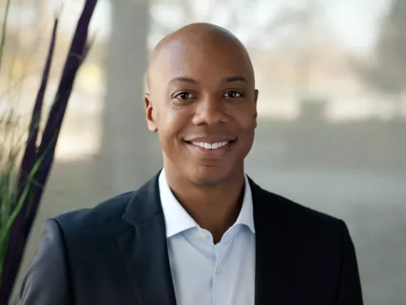
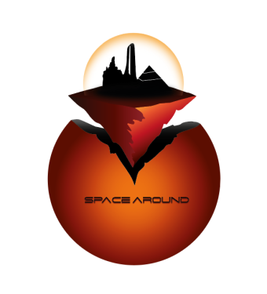

Space Around
Escape in space
Introduction
Space Around est une entreprise de voyage clé en main, spécialisée dans l'aventure et la recherche de sensations fortes.
L'entreprise déjà implantée dans les 4 coins de la planète Terre, avec des parcs sur le thème de Mars, ne sait pas comment se réinventer sur ce vaste territoire, où la concurrence fait rage.
Pour pallier ce soucis lié à la concurrence, Space Around, innove en développant un concept unique
Un parc d'attractions sur Mars, qui est une destination déjà extrêmement prisée par les ultra-riches graçe aux agences de voyages de l'ultra luxe
🚀Votre voyage sur Mars🚀
L'equipe
Chef de Projet: Yanis LAFITTE
Animation 3D :
Réalisation et modélisation d’un plan du parc d’attraction, affiche :
Eva MAZURE, Nicolas GOUTEUX, Yanis LAFITTE
Audiovisuel:
Rassemblement des idées et informations pour la réalisation de la vidéo :
Antoine PORTOIS, Eliott PINGARD, Ronan DERUY
Informatique:
Réalisation du mockup de site web et apport d’idées à l'ensemble du groupe :
Anthony CAVAGNE, Adrien HOULE, Arthur CAPO, Corentin ROUGEON, Laura MATHIEU, Paul BERDIER
Deploiement site web :
Adrien Houle
Création et design:
Réalisation de l’identité visuelle, logo et charte graphique :
Tom CIANI-CANDELON
Marketing et communication:
Réalisation de l’entreprise avec la présentation de celle ci, le concept et le contexte :
Adrien FUCHS, Noémie ROTH, Ludmilla CHARPENTIER, Alexandra WALKER
Chiffres
- 16 parcs d’attraction à travers le monde.
- Entre 50 et 150 attractions par parcs.
- Plus de 50 partenaires sur l'ensemble du réseau.
- 100 d'hôtels sur le réseau.
- 10 millions de visiteurs par an en moyenne dans chacun de nos parcs.
- 300 millions de chiffre d'affaires par an en moyenne sur chacun de nos parcs.
Concept
Notre dôme est plus qu'un simple complexe hôtelier ou qu’un parc d'attractions, c’est un véritable espace de vie, où l’on peut y venir pour profiter simplement du parc mais le paysage et l'éloignement terrestre en font un endroit attractif.
Propice à la familles en vacances mais aussi des professionnels en team building avec des espaces dédiés aux pros, notre complexe couvre différents besoins.
Le client se voit proposer un catalogue d'activités type sensations fortes mais aussi culturelles et scientifiques porteuses d'innovations.
Les activités se déroulant dans le complexe pour la plupart, mais certaines, comme la balade en buggy, se feront hors du dôme ce qui vous donnera une expérience alliant confort et aventures tout au long de votre séjour.
De plus, un train desservira différentes stations à l'intérieur et à l'extérieur du dôme ce qui vous assure mobilité et confort.
Le complexe se verra doté d'un stade permettant des compétitions de sport "martiens".
Tout cela à des tarifs défiants toute concurrence et ainsi ouvrir le tourisme de Mars à l'ensemble de la planète Terre.
Persona 1
Marie LELAC
age : 35 ans
Mariée, mère de 2 enfants de 7 et 9 ans.
Habite à Toulouse.
Travaille dans une boutique de prêt à porter.
Elle fait beaucoup pour ses enfants dès qu'elle a du temps libre.
Sportive, aime sortir et profiter de sa famille.
Le parc attire les enfants mais bien sûr également les parents.
Persona 2
Pierre DUBLANC
age : 30
Profession : Entrepreneur
Localisation : Paris
Biographie : Pierre est un chercheur en sciences du vivant devenu entrepreneur
depuis qu’il a découvert une solution rendant possible la purification de l'atmosphère
de Mars.
Sa startup est une licorne (valorisée à plus d’1 milliard de dollars) et attire
encore de nombreux investisseurs.
Personnalité : Esprit pionnier
Objectifs : Accroître la notoriété de son entreprise afin d’attirer de nouveaux capitaux. Faire des découvertes.
Frustrations : Pas d'infrastructures à “sa mesure” sur Terre.
Réponse : Étant un pôle d’innovation favorable à la créativité et à l'application de ses
solutions ainsi qu’un lieu favorable à la rencontre avec des business angels, notre
complexe coche toutes les cases pour un entrepreneur tel Pierre.

Explication du logo
Notre logo a été conçu pour nos parcs terrestres qui ont pour thématique Mars.
Mais il est d'autant plus adapté à notre nouveau concept car :
La sphère orange représentant Mars et sa couleur atypique, les silhouettes des bâtiments et d'attractions qui représentent notre parc et ses spécificités.
Les couleurs utilisées font échos à la palette de couleurs de Mars et à notre charte graphique.
Depuis que l'humanité a quitté son berceau, elle n'a jamais étanché sa soif de conquête :
après avoir colonisé la planète bleue elle jette maintenant son dévolu sur la rouge.
Fort de notre expérience dans la conception et la construction d'espaces dédiés au divertissement,
nous avons pris la décision de vivre avec notre temps et de nous lancer dans cette épopée spatiale.
Avec notre complexe, nous posons les fondations d'une nouvelle colonie et vous ouvrons les portes vers un monde nouveau où tout reste à découvrir.

Reveillez le pionnier qui sommeille en vous et rejoignez l'aventure, prochain arret :
La planete Mars